<title>Madame Caci Instagram</title>
<meta name="claude:viewport-fit-sides" content="cover">
<link rel="stylesheet" href="https://fonts.googleapis.com/css2?family=Cormorant+Garamond:wght@500&family=Jost:wght@400;500&display=swap">
<style>
/* Layout: review page for a personal Instagram account — sticky tabs A–F, each deliverable on its own view, every Story shown large and individually. Single warm light look taken from the photos. */
:root{--bg:#FAF7F2;--paper:#FFFFFF;--ink:#211B17;--muted:#6F655D;--accent:#8E5B3B;--line:rgba(33,27,23,.12);--d:"Cormorant Garamond",Georgia,serif;--s:"Jost",system-ui,sans-serif;color-scheme:light}
*{box-sizing:border-box}body{margin:0;background:var(--bg);color:var(--ink);font:400 16px/1.55 var(--s)}
.wrap{max-width:1320px;margin:0 auto;padding-left:max(16px,env(safe-area-inset-left,0px));padding-right:max(16px,env(safe-area-inset-right,0px))}
header.top{padding-block:48px 20px}.eyebrow{font:500 12px var(--s);letter-spacing:.24em;text-transform:uppercase;color:var(--accent)}
h1{font:500 clamp(38px,5.5vw,66px)/1 var(--d);margin:12px 0 12px;text-wrap:balance}h2{font:500 42px/1.05 var(--d);margin:8px 0 8px}h3{font:500 12px var(--s);letter-spacing:.2em;text-transform:uppercase;color:var(--muted);margin:44px 0 14px}h3 span{margin-left:12px;letter-spacing:0;text-transform:none;font-size:14px}
.lead{max-width:74ch;color:var(--muted);margin:0}
nav.tabs{position:sticky;top:env(safe-area-inset-top,0px);z-index:5;background:var(--bg);border-bottom:1px solid var(--line)}body::before{content:"";position:fixed;inset:0 0 auto;height:env(safe-area-inset-top,0px);z-index:10;background:var(--bg)}
nav.tabs .wrap{display:flex;gap:2px;overflow-x:auto}nav.tabs a{padding:14px 12px;font:500 15px var(--s);color:var(--muted);text-decoration:none;white-space:nowrap;border-bottom:2px solid transparent}nav.tabs a[aria-current="page"]{color:var(--ink);border-bottom-color:var(--accent)}a:focus-visible{outline:2px solid var(--accent);outline-offset:2px}
main{padding-block:28px 72px}figure{margin:0;min-width:0}figcaption{font-size:13px;color:var(--muted);margin-top:8px;line-height:1.4}figcaption a{color:var(--accent)}img{max-width:100%;display:block}
.pair{display:grid;grid-template-columns:340px minmax(0,1fr);gap:48px;align-items:start;margin-top:28px}
.phone .scr{height:700px;overflow-y:auto;border-radius:36px;border:10px solid #161412;background:#fff}.phone img{width:100%}
#A .pair{grid-template-columns:repeat(2,340px)}
.grid3{display:grid;grid-template-columns:repeat(3,minmax(0,1fr));gap:4px}.grid4{display:grid;grid-template-columns:repeat(4,minmax(0,1fr));gap:16px}
.stories{display:grid;grid-template-columns:repeat(3,minmax(0,1fr));gap:28px}.st img{border-radius:14px;box-shadow:0 0 0 1px var(--line)}
.covers{display:flex;gap:44px;flex-wrap:wrap;margin-bottom:28px}.cv{text-align:center}.cv b{display:block;font-weight:500;letter-spacing:.04em;margin-top:10px}.circ{display:inline-block;width:120px;height:120px;border-radius:50%;padding:4px;border:1px solid #DBDBDB;margin:0 6px}.circ img{border-radius:50%;width:100%}
footer{font-size:13px;color:var(--muted);padding-block:24px 56px;border-top:1px solid var(--line)}
@media (max-width:900px){.pair,#A .pair{grid-template-columns:minmax(0,1fr)}.phone{max-width:340px}.grid4{grid-template-columns:repeat(2,minmax(0,1fr))}.stories{grid-template-columns:minmax(0,1fr)}.st{max-width:420px}}
</style>
<header class="top wrap"><div class="eyebrow">Instagram personnel de Tiziana Caci</div><h1>Madame Caci</h1>
<p class="lead">Six livrables séparés : le profil, le feed, l’onglet Reels, les Stories individuelles, les séquences écran par écran et les deux Stories à la une. Aucun élément de l’identité Fynovates.</p></header>
<nav class="tabs" aria-label="Livrables"><div class="wrap"><a href="#A">A · Profil</a><a href="#B">B · Feed</a><a href="#C">C · Reels</a><a href="#D">D · Stories</a><a href="#E">E · Séquences</a><a href="#F">F · À la une</a></div></nav>
<main class="wrap"><section id="A" data-view="A"><div class="eyebrow">Livrable A</div><h2>Profil Instagram</h2><p class="lead">Portrait réel, nom affiché « Tiziana Caci », bio minimaliste « Fondatrice &amp; directrice de @fynovates » (la mention en couleur de lien) et les deux Stories à la une. « [identifiant] » et « [N] » sont à remplacer par les informations réelles.</p>
<div class="pair"><figure class="phone"><div class="scr"></div><figcaption>Écran à l’ouverture du profil</figcaption></figure><figure class="phone"><div class="scr">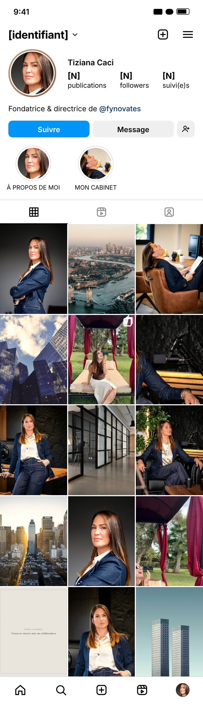</div><figcaption>Page complète (faire défiler)</figcaption></figure></div></section><section id="B" data-view="B" hidden><div class="eyebrow">Livrable B</div><h2>FEED INSTAGRAM — MADAME CACI</h2><p class="lead">Quinze photographies, sans texte, sans logo, sans montage.</p>
<div class="pair"><figure class="phone"><div class="scr"></div><figcaption>Grille sur smartphone</figcaption></figure><div class="grid3"><a href="img/B-feed_photos_feed-01-portrait-studio.jpg" target="_blank" rel="noopener"></a><a href="img/B-feed_photos_feed-02-londres.jpg" target="_blank" rel="noopener"></a><a href="img/B-feed_photos_feed-03-au-bureau.jpg" target="_blank" rel="noopener"></a><a href="img/B-feed_photos_feed-04-architecture-verre.jpg" target="_blank" rel="noopener"></a><a href="img/B-feed_photos_feed-05-jardin.jpg" target="_blank" rel="noopener"></a><a href="img/B-feed_photos_feed-06-detail-micro.jpg" target="_blank" rel="noopener">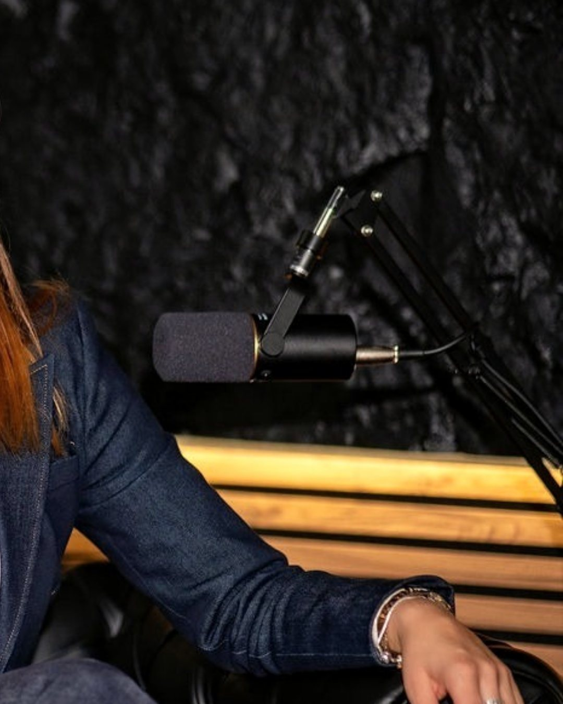</a><a href="img/B-feed_photos_feed-07-debout-bureau.jpg" target="_blank" rel="noopener">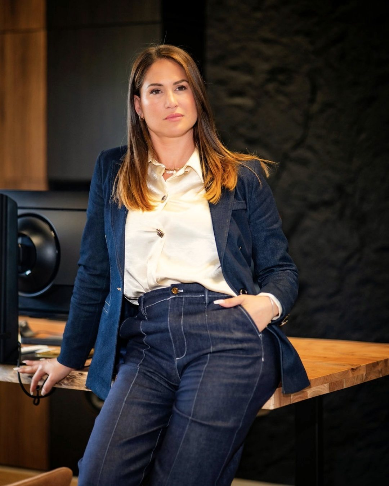</a><a href="img/B-feed_photos_feed-08-interieur-bureaux.jpg" target="_blank" rel="noopener"></a><a href="img/B-feed_photos_feed-09-prise-de-parole.jpg" target="_blank" rel="noopener">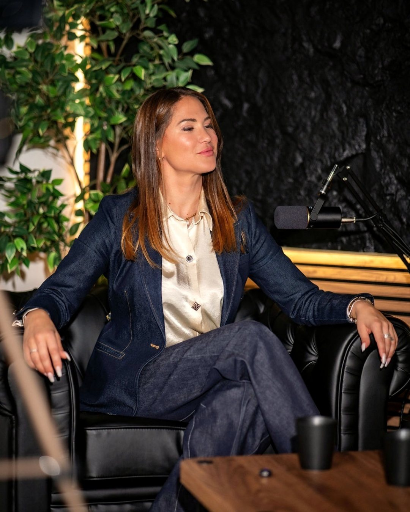</a><a href="img/B-feed_photos_feed-10-new-york.jpg" target="_blank" rel="noopener"></a><a href="img/B-feed_photos_feed-11-portrait-serre.jpg" target="_blank" rel="noopener"></a><a href="img/B-feed_photos_feed-12-palmiers.jpg" target="_blank" rel="noopener"></a><a href="img/B-feed_photos_feed-13-reunion.jpg" target="_blank" rel="noopener"></a><a href="img/B-feed_photos_feed-14-portrait-naturel.jpg" target="_blank" rel="noopener">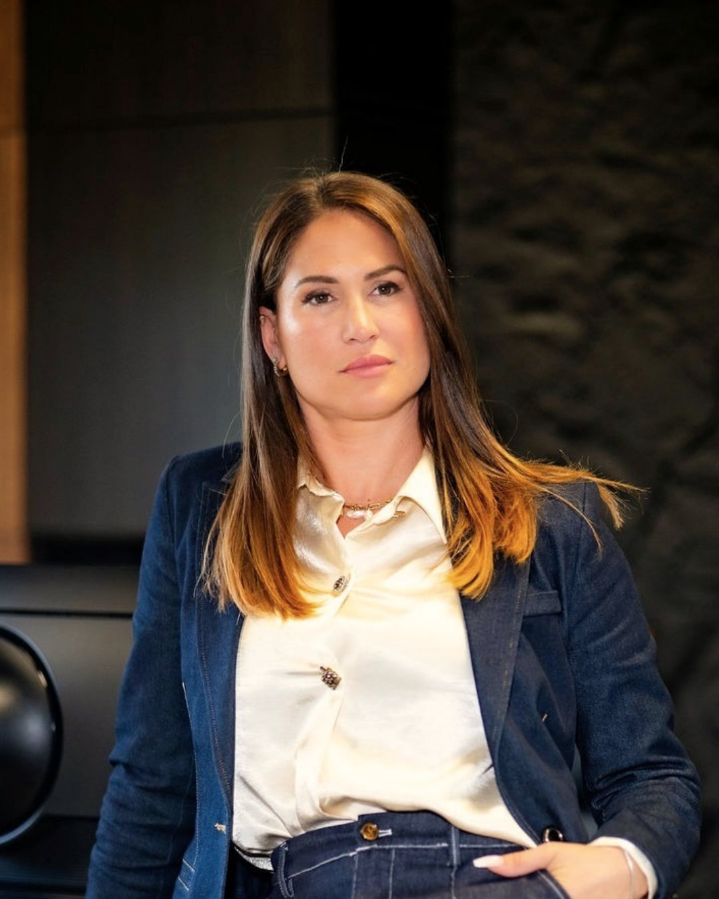</a><a href="img/B-feed_photos_feed-15-tours.jpg" target="_blank" rel="noopener">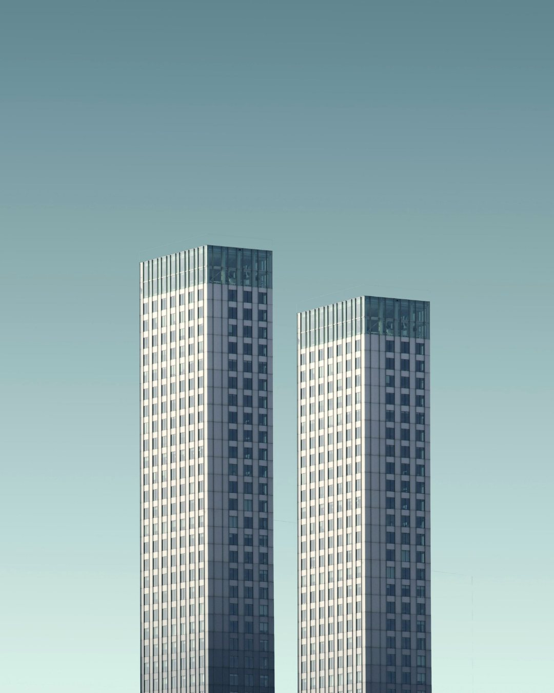</a></div></div></section><section id="C" data-view="C" hidden><div class="eyebrow">Livrable C</div><h2>Onglet Reels</h2><p class="lead">Douze vidéos : face caméra, reportage et terrain, extraits YouTube, storytelling. Miniatures tirées des photos fournies, en attendant les captures des vraies vidéos.</p>
<div class="pair"><figure class="phone"><div class="scr">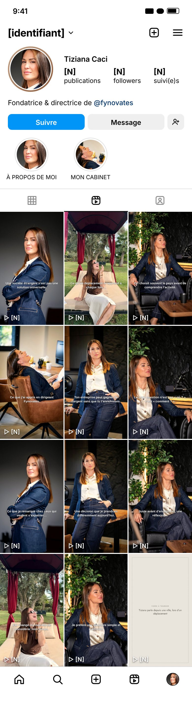</div><figcaption>Onglet Reels sur smartphone</figcaption></figure><div class="grid4"><figure><figcaption><b>Face caméra</b><br>Pourquoi je ne crois pas aux sociétés étrangères comme solutions universelles</figcaption></figure><figure>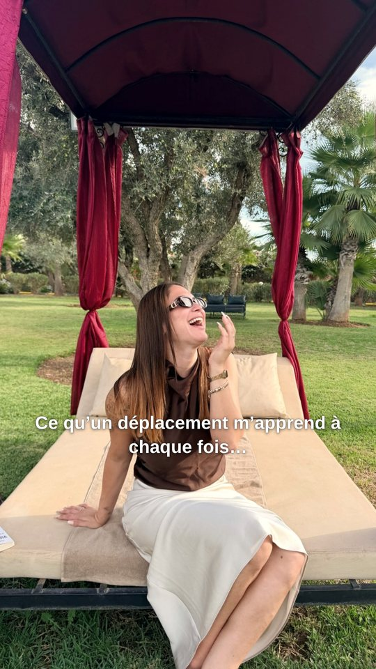<figcaption><b>Reportage et terrain</b><br>Une observation pendant un déplacement</figcaption></figure><figure><figcaption><b>Extrait YouTube</b><br>Pourquoi choisir son pays avant d’analyser son activité est une erreur</figcaption></figure><figure>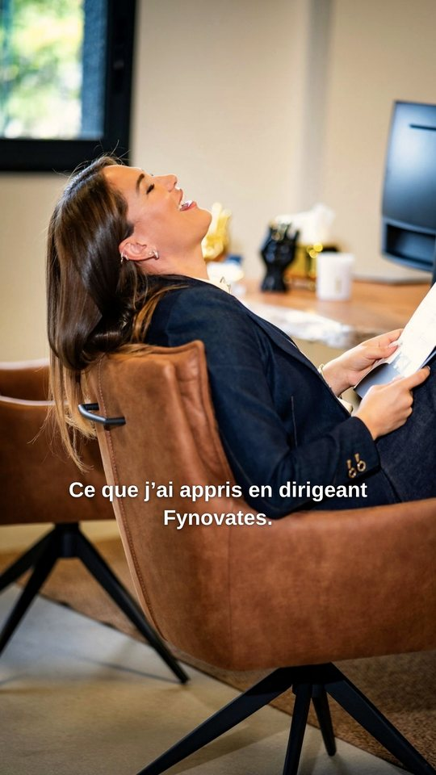<figcaption><b>Storytelling</b><br>Ce que j’ai appris en dirigeant Fynovates</figcaption></figure><figure>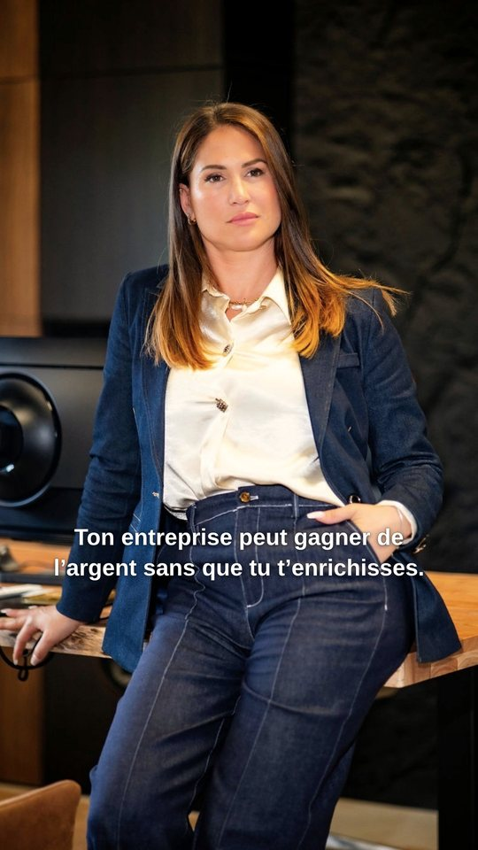<figcaption><b>Face caméra</b><br>Une entreprise peut gagner de l’argent sans enrichir réellement son dirigeant</figcaption></figure><figure><figcaption><b>Extrait YouTube</b><br>Un raisonnement extrait d’un décryptage</figcaption></figure><figure>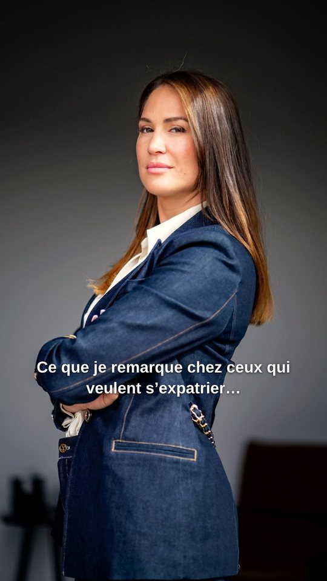<figcaption><b>Face caméra</b><br>Ce que je remarque chez les entrepreneurs qui veulent s’expatrier</figcaption></figure><figure>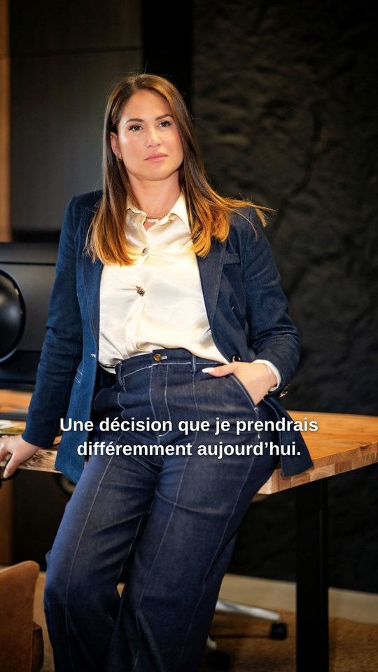<figcaption><b>Storytelling</b><br>Une décision de dirigeante</figcaption></figure><figure>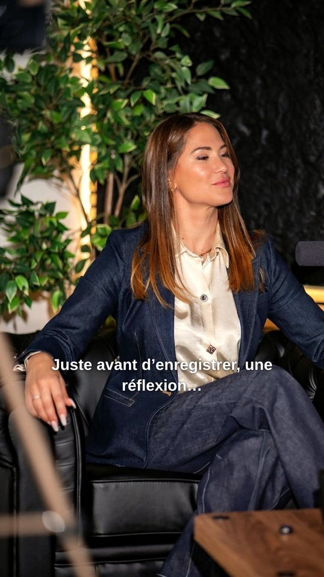<figcaption><b>Reportage et terrain</b><br>En marge d’une intervention</figcaption></figure><figure><figcaption><b>Storytelling</b><br>Une conviction qui a évolué</figcaption></figure><figure>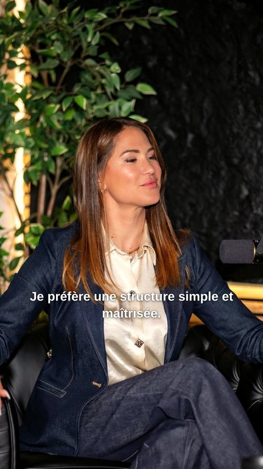<figcaption><b>Extrait YouTube</b><br>Une prise de position</figcaption></figure><figure>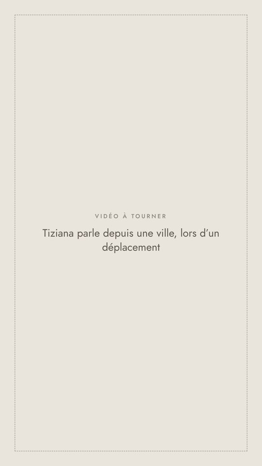<figcaption><b>Reportage et terrain</b><br>Une réflexion filmée en ville</figcaption></figure></div></div></section><section id="D" data-view="D" hidden><div class="eyebrow">Livrable D</div><h2>Stories individuelles</h2><p class="lead">Chaque Story en grand, au format 1080 × 1920 (cliquez pour l’ouvrir en taille réelle). Pour les Stories interactives, l’image montre le sticker simulé ; le fichier à publier laisse la place libre pour le vrai sticker.</p><h3>Dossier 1 · Photos de Tiziana + textes</h3><div class="stories"><figure class="st"><a href="img/D-stories_1-photos-de-tiziana_story-1a-decision.jpg" target="_blank" rel="noopener">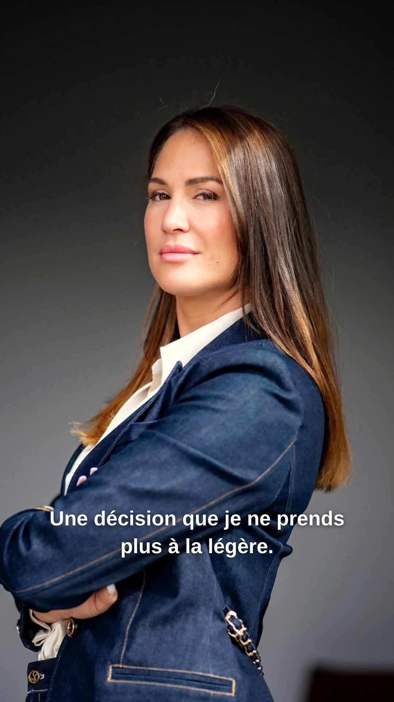</a><figcaption><b>Portrait · texte court en bas</b><br><a href="img/D-stories_1-photos-de-tiziana_story-1a-decision.jpg" target="_blank" rel="noopener">Ouvrir en 1080 × 1920</a></figcaption></figure><figure class="st"><a href="img/D-stories_1-photos-de-tiziana_story-1b-liberte-geographique.jpg" target="_blank" rel="noopener">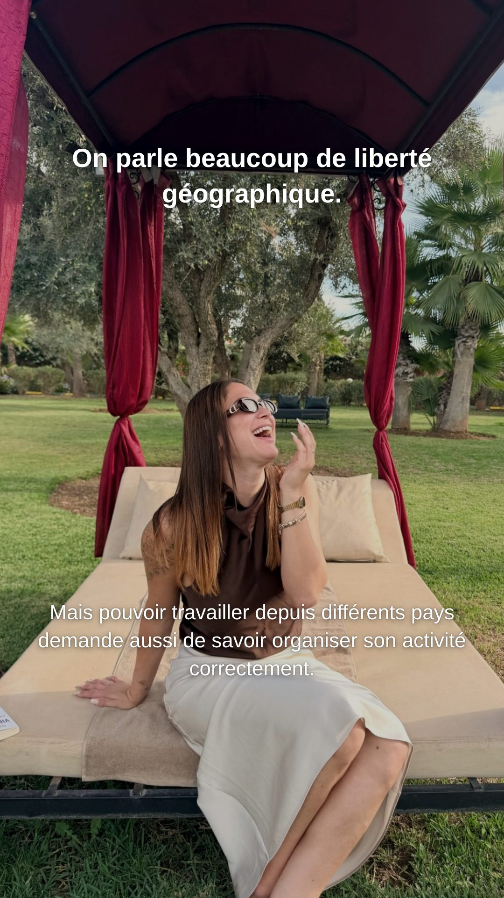</a><figcaption><b>En extérieur · texte en haut et en bas</b><br><a href="img/D-stories_1-photos-de-tiziana_story-1b-liberte-geographique.jpg" target="_blank" rel="noopener">Ouvrir en 1080 × 1920</a></figcaption></figure><figure class="st"><a href="img/D-stories_1-photos-de-tiziana_story-1c-experience.jpg" target="_blank" rel="noopener">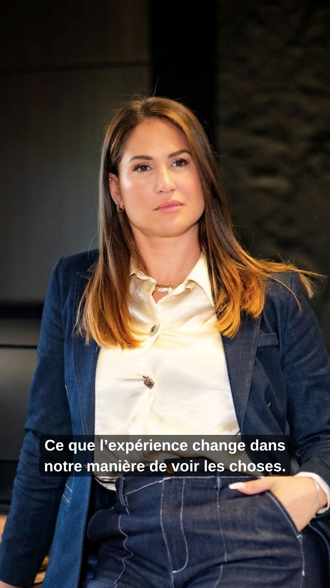</a><figcaption><b>Portrait serré · fond sombre</b><br><a href="img/D-stories_1-photos-de-tiziana_story-1c-experience.jpg" target="_blank" rel="noopener">Ouvrir en 1080 × 1920</a></figcaption></figure></div><h3>Dossier 2 · Paysages et lifestyle + textes</h3><div class="stories"><figure class="st"><a href="img/D-stories_2-paysages-lifestyle_story-2a-londres.jpg" target="_blank" rel="noopener"></a><figcaption><b>Ville · bandeau sérif</b> · photo de lieu du projet<br><a href="img/D-stories_2-paysages-lifestyle_story-2a-londres.jpg" target="_blank" rel="noopener">Ouvrir en 1080 × 1920</a></figcaption></figure><figure class="st"><a href="img/D-stories_2-paysages-lifestyle_story-2b-new-york.jpg" target="_blank" rel="noopener">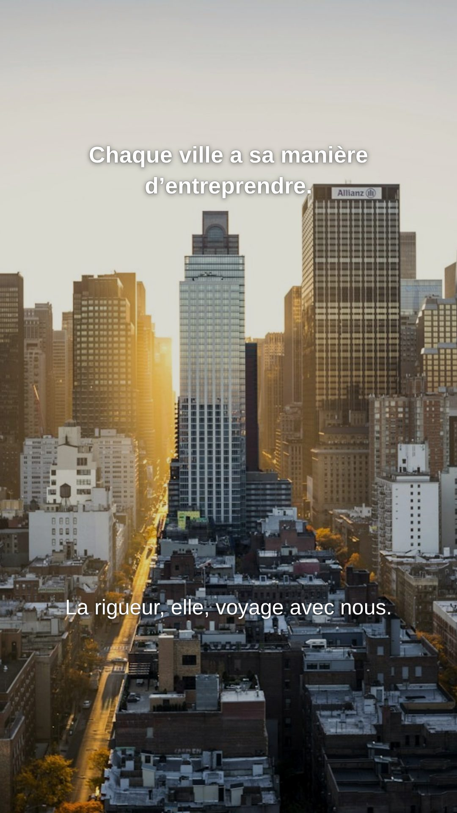</a><figcaption><b>Ville · texte blanc</b> · photo de lieu du projet<br><a href="img/D-stories_2-paysages-lifestyle_story-2b-new-york.jpg" target="_blank" rel="noopener">Ouvrir en 1080 × 1920</a></figcaption></figure><figure class="st"><a href="img/D-stories_2-paysages-lifestyle_story-2c-tours.jpg" target="_blank" rel="noopener">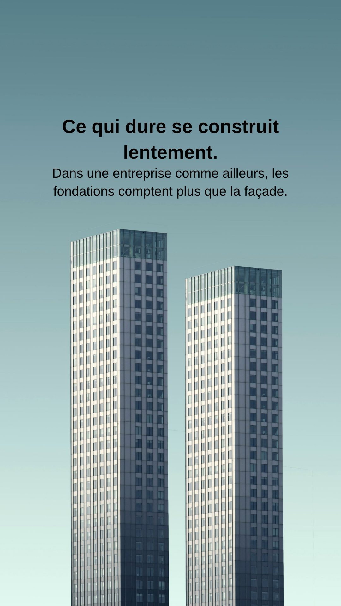</a><figcaption><b>Architecture · texte noir</b> · photo de lieu du projet<br><a href="img/D-stories_2-paysages-lifestyle_story-2c-tours.jpg" target="_blank" rel="noopener">Ouvrir en 1080 × 1920</a></figcaption></figure><figure class="st"><a href="img/D-stories_2-paysages-lifestyle_story-2d-palmiers.jpg" target="_blank" rel="noopener">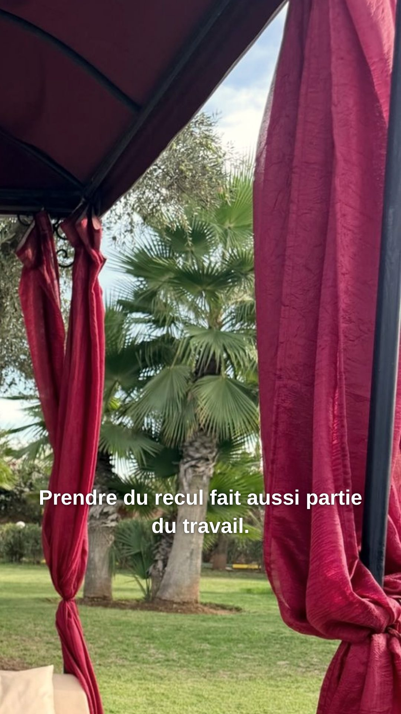</a><figcaption><b>Déplacement · texte court</b><br><a href="img/D-stories_2-paysages-lifestyle_story-2d-palmiers.jpg" target="_blank" rel="noopener">Ouvrir en 1080 × 1920</a></figcaption></figure></div><h3>Dossier 3 · Stories éditoriales · convictions</h3><div class="stories"><figure class="st"><a href="img/D-stories_3-editoriales-convictions_story-3a-standards.jpg" target="_blank" rel="noopener"></a><figcaption><b>Standards · titre en haut, phrases en bas</b><br><a href="img/D-stories_3-editoriales-convictions_story-3a-standards.jpg" target="_blank" rel="noopener">Ouvrir en 1080 × 1920</a></figcaption></figure><figure class="st"><a href="img/D-stories_3-editoriales-convictions_story-3b-experience.jpg" target="_blank" rel="noopener">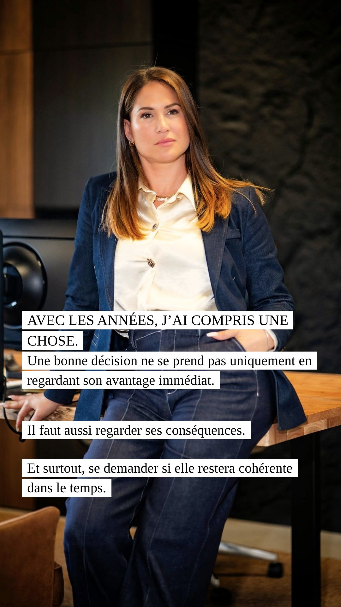</a><figcaption><b>Expérience · bloc aligné à gauche</b><br><a href="img/D-stories_3-editoriales-convictions_story-3b-experience.jpg" target="_blank" rel="noopener">Ouvrir en 1080 × 1920</a></figcaption></figure><figure class="st"><a href="img/D-stories_3-editoriales-convictions_story-3c-vision.jpg" target="_blank" rel="noopener">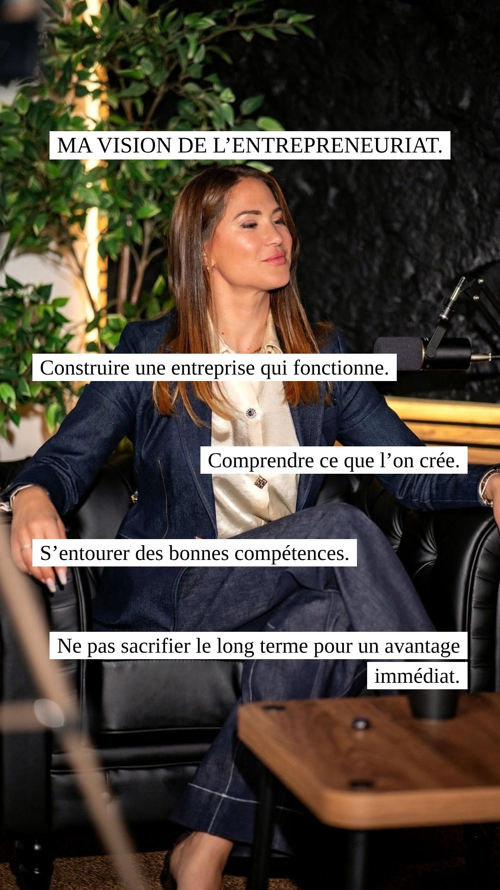</a><figcaption><b>Vision · phrases réparties sur la photo</b><br><a href="img/D-stories_3-editoriales-convictions_story-3c-vision.jpg" target="_blank" rel="noopener">Ouvrir en 1080 × 1920</a></figcaption></figure></div><h3>Dossier 4 · Face caméra</h3><div class="stories"><figure class="st"><a href="img/D-stories_4-face-camera_story-4a-erreur.jpg" target="_blank" rel="noopener">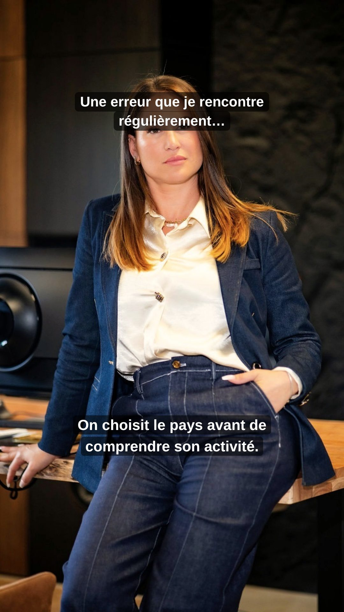</a><figcaption><b>Face caméra · bureau</b><br><a href="img/D-stories_4-face-camera_story-4a-erreur.jpg" target="_blank" rel="noopener">Ouvrir en 1080 × 1920</a></figcaption></figure><figure class="st"><a href="img/D-stories_4-face-camera_story-4b-annees.jpg" target="_blank" rel="noopener">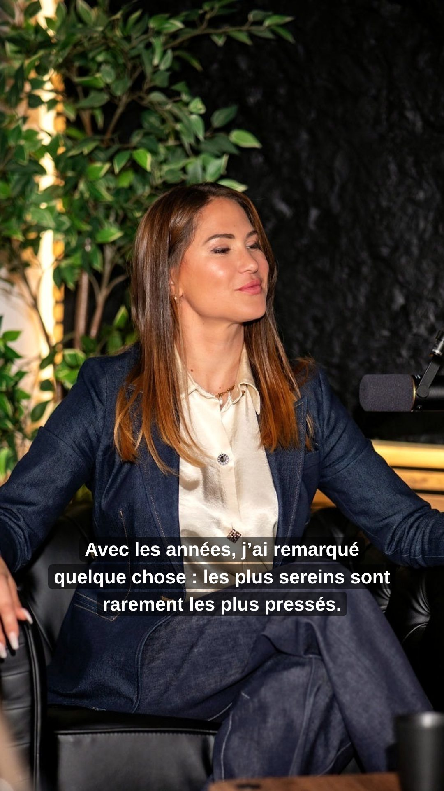</a><figcaption><b>Face caméra · studio</b><br><a href="img/D-stories_4-face-camera_story-4b-annees.jpg" target="_blank" rel="noopener">Ouvrir en 1080 × 1920</a></figcaption></figure><figure class="st"><a href="img/D-stories_4-face-camera_story-4c-fynovates.jpg" target="_blank" rel="noopener">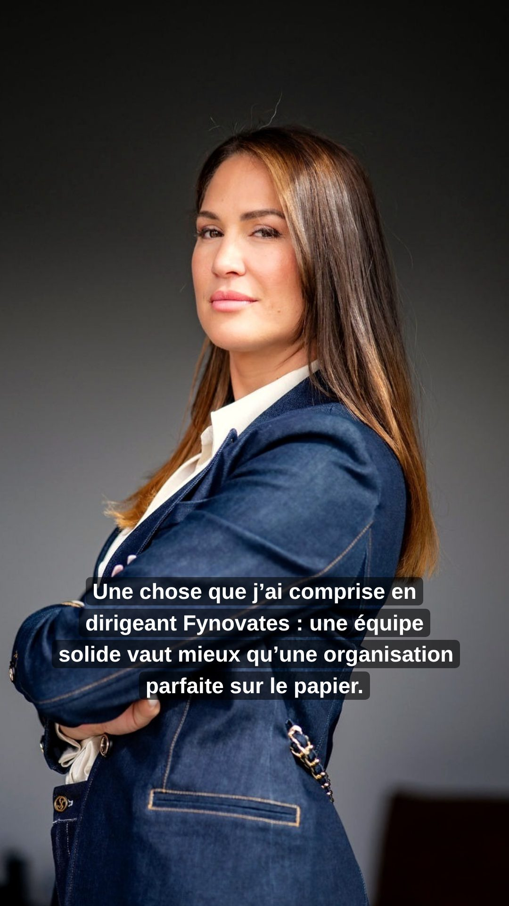</a><figcaption><b>Face caméra · portrait</b><br><a href="img/D-stories_4-face-camera_story-4c-fynovates.jpg" target="_blank" rel="noopener">Ouvrir en 1080 × 1920</a></figcaption></figure></div><h3>Dossier 5 · Coulisses de dirigeante</h3><div class="stories"><figure class="st"><a href="img/D-stories_5-coulisses-de-dirigeante_story-5a-organisation.jpg" target="_blank" rel="noopener">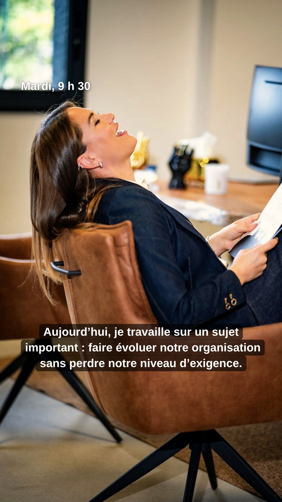</a><figcaption><b>Bureau · heure et fond sombre</b><br><a href="img/D-stories_5-coulisses-de-dirigeante_story-5a-organisation.jpg" target="_blank" rel="noopener">Ouvrir en 1080 × 1920</a></figcaption></figure><figure class="st"><a href="img/D-stories_5-coulisses-de-dirigeante_story-5b-tournage.jpg" target="_blank" rel="noopener">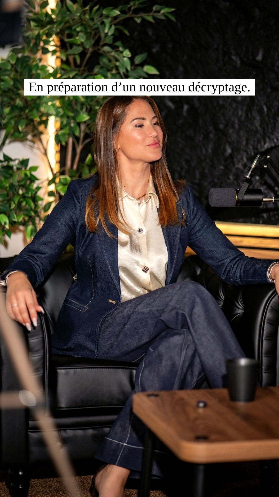</a><figcaption><b>Préparation d’une vidéo · bandeau</b><br><a href="img/D-stories_5-coulisses-de-dirigeante_story-5b-tournage.jpg" target="_blank" rel="noopener">Ouvrir en 1080 × 1920</a></figcaption></figure><figure class="st"><a href="img/D-stories_5-coulisses-de-dirigeante_story-5c-demain.jpg" target="_blank" rel="noopener"></a><figcaption><b>Détail du bureau · texte blanc</b><br><a href="img/D-stories_5-coulisses-de-dirigeante_story-5c-demain.jpg" target="_blank" rel="noopener">Ouvrir en 1080 × 1920</a></figcaption></figure><figure class="st"><a href="img/D-stories_5-coulisses-de-dirigeante_story-5d-equipe.jpg" target="_blank" rel="noopener">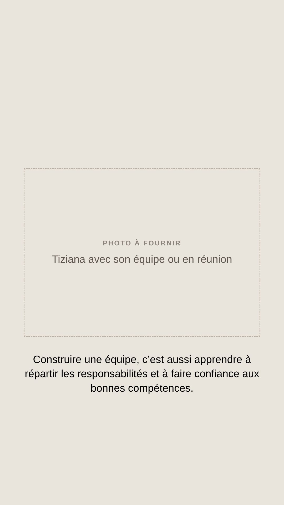</a><figcaption><b>Équipe · photo à fournir</b> · photo à fournir<br><a href="img/D-stories_5-coulisses-de-dirigeante_story-5d-equipe.jpg" target="_blank" rel="noopener">Ouvrir en 1080 × 1920</a></figcaption></figure></div><h3>Dossier 6 · Stories interactives</h3><div class="stories"><figure class="st"><a href="img/D-stories_6-interactives_apercus-avec-sticker_story-6a-question.jpg" target="_blank" rel="noopener">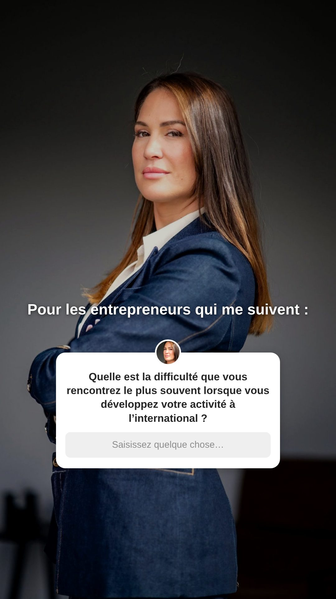</a><figcaption><b>Boîte à questions</b><br><a href="img/D-stories_6-interactives_apercus-avec-sticker_story-6a-question.jpg" target="_blank" rel="noopener">Ouvrir en 1080 × 1920</a></figcaption></figure><figure class="st"><a href="img/D-stories_6-interactives_apercus-avec-sticker_story-6b-sondage.jpg" target="_blank" rel="noopener">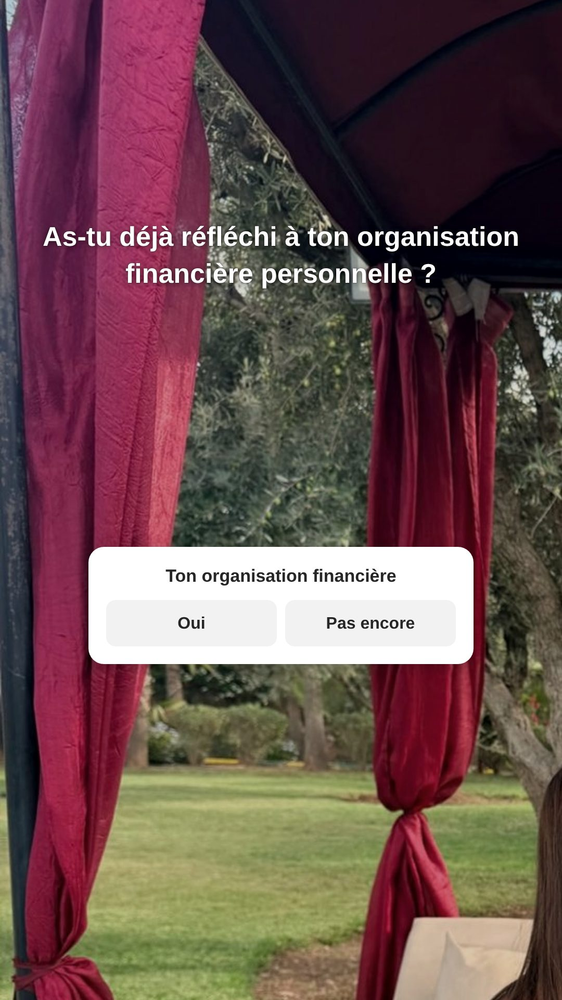</a><figcaption><b>Sondage</b><br><a href="img/D-stories_6-interactives_apercus-avec-sticker_story-6b-sondage.jpg" target="_blank" rel="noopener">Ouvrir en 1080 × 1920</a></figcaption></figure><figure class="st"><a href="img/D-stories_6-interactives_apercus-avec-sticker_story-6c-lien-youtube.jpg" target="_blank" rel="noopener">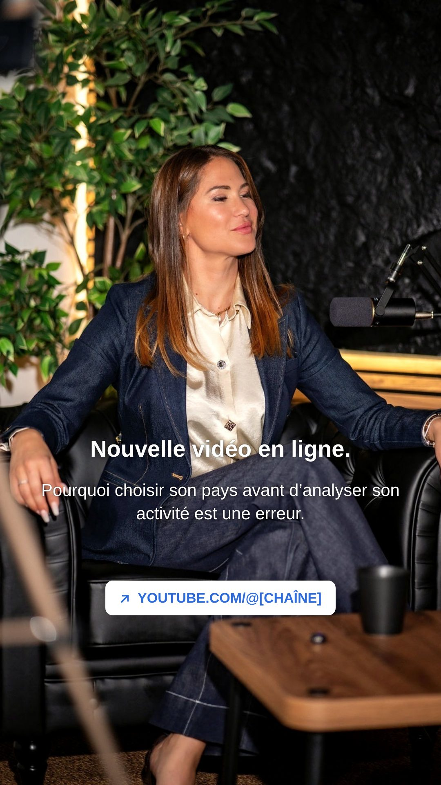</a><figcaption><b>Lien YouTube</b><br><a href="img/D-stories_6-interactives_apercus-avec-sticker_story-6c-lien-youtube.jpg" target="_blank" rel="noopener">Ouvrir en 1080 × 1920</a></figcaption></figure><figure class="st"><a href="img/D-stories_6-interactives_apercus-avec-sticker_story-6d-lien-fynovates.jpg" target="_blank" rel="noopener">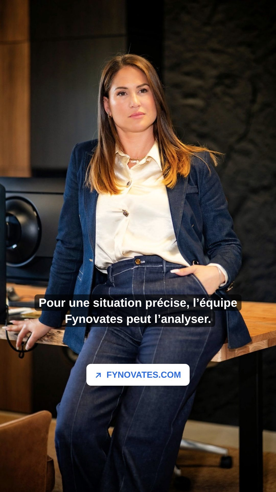</a><figcaption><b>Lien vers Fynovates</b><br><a href="img/D-stories_6-interactives_apercus-avec-sticker_story-6d-lien-fynovates.jpg" target="_blank" rel="noopener">Ouvrir en 1080 × 1920</a></figcaption></figure><figure class="st"><a href="img/D-stories_6-interactives_apercus-avec-sticker_story-6e-quiz.jpg" target="_blank" rel="noopener">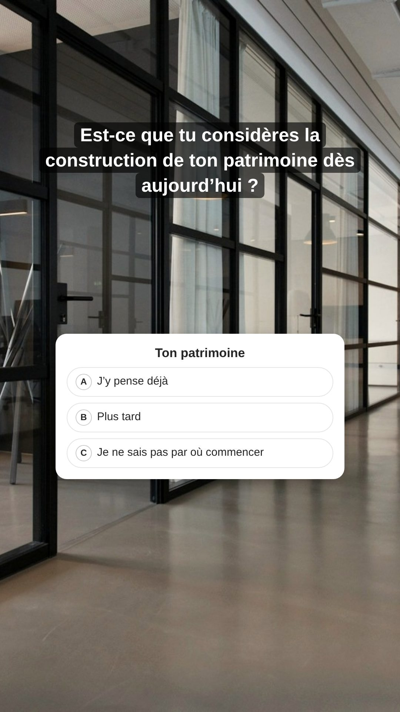</a><figcaption><b>Quiz</b> · photo de lieu du projet<br><a href="img/D-stories_6-interactives_apercus-avec-sticker_story-6e-quiz.jpg" target="_blank" rel="noopener">Ouvrir en 1080 × 1920</a></figcaption></figure></div></section><section id="E" data-view="E" hidden><div class="eyebrow">Livrable E</div><h2>Séquences complètes</h2><p class="lead">Chaque séquence écran par écran ; chaque fichier se publie directement comme une Story.</p><h3>Séquence A · Avec le recul…<span>Les enseignements de Tiziana</span></h3><div class="stories"><figure class="st"><a href="img/E-sequences_a-avec-le-recul_ecran-1.jpg" target="_blank" rel="noopener">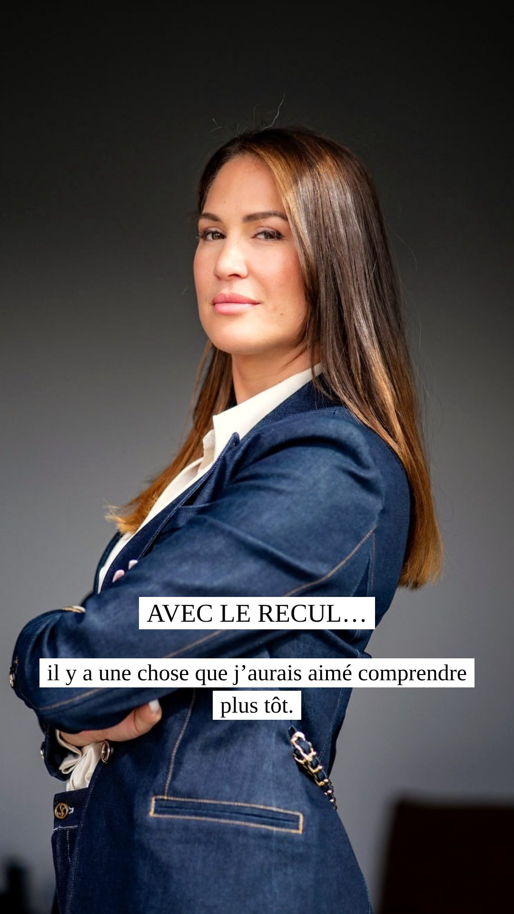</a><figcaption><b>Écran 1 · Accroche</b><br><a href="img/E-sequences_a-avec-le-recul_ecran-1.jpg" target="_blank" rel="noopener">Ouvrir en 1080 × 1920</a></figcaption></figure><figure class="st"><a href="img/E-sequences_a-avec-le-recul_ecran-2.jpg" target="_blank" rel="noopener">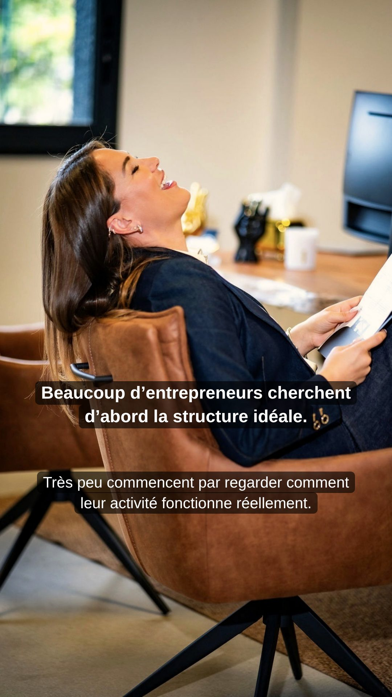</a><figcaption><b>Écran 2 · Observation</b><br><a href="img/E-sequences_a-avec-le-recul_ecran-2.jpg" target="_blank" rel="noopener">Ouvrir en 1080 × 1920</a></figcaption></figure><figure class="st"><a href="img/E-sequences_a-avec-le-recul_ecran-3.jpg" target="_blank" rel="noopener">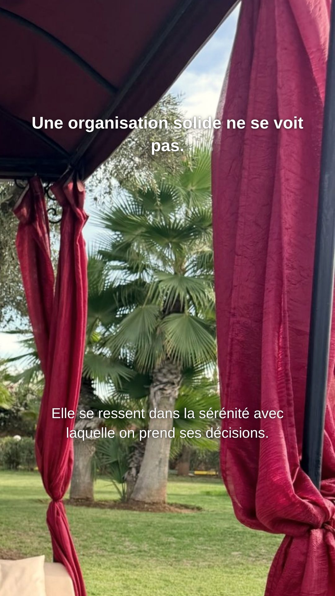</a><figcaption><b>Écran 3 · Réflexion</b><br><a href="img/E-sequences_a-avec-le-recul_ecran-3.jpg" target="_blank" rel="noopener">Ouvrir en 1080 × 1920</a></figcaption></figure><figure class="st"><a href="img/E-sequences_a-avec-le-recul_ecran-4.jpg" target="_blank" rel="noopener">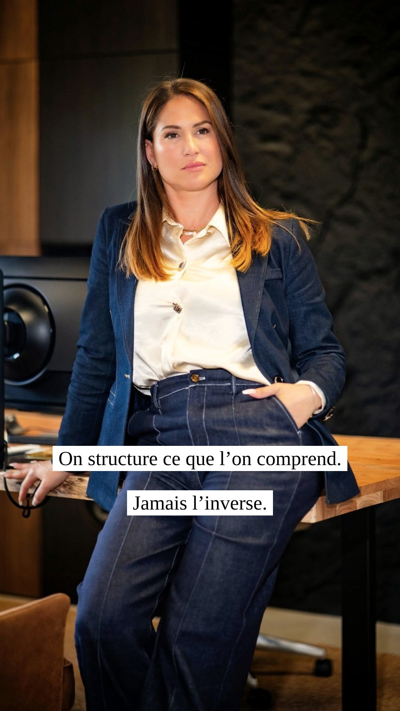</a><figcaption><b>Écran 4 · Conviction</b><br><a href="img/E-sequences_a-avec-le-recul_ecran-4.jpg" target="_blank" rel="noopener">Ouvrir en 1080 × 1920</a></figcaption></figure></div><h3>Séquence B · Journal de dirigeante<span>Le développement de Fynovates</span></h3><div class="stories"><figure class="st"><a href="img/E-sequences_b-journal-de-dirigeante_ecran-1.jpg" target="_blank" rel="noopener"></a><figcaption><b>Écran 1 · Moment de travail</b><br><a href="img/E-sequences_b-journal-de-dirigeante_ecran-1.jpg" target="_blank" rel="noopener">Ouvrir en 1080 × 1920</a></figcaption></figure><figure class="st"><a href="img/E-sequences_b-journal-de-dirigeante_ecran-2.jpg" target="_blank" rel="noopener">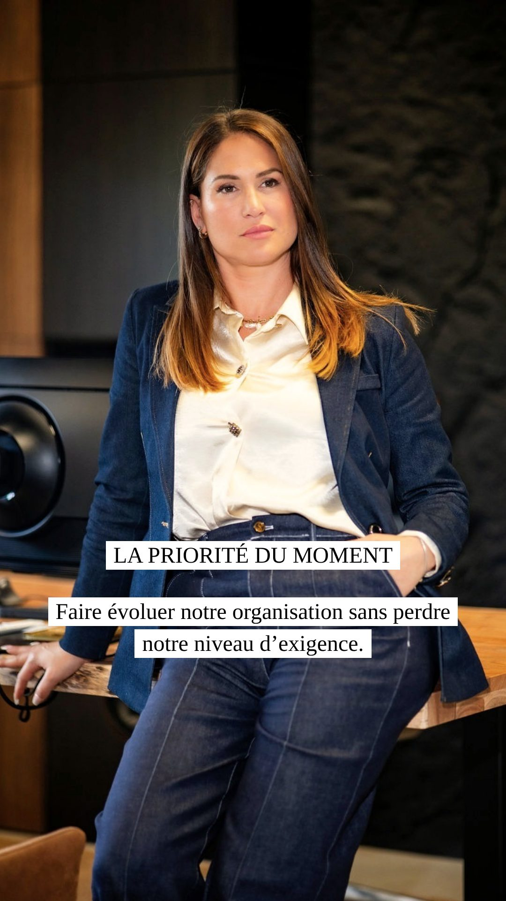</a><figcaption><b>Écran 2 · Priorité</b><br><a href="img/E-sequences_b-journal-de-dirigeante_ecran-2.jpg" target="_blank" rel="noopener">Ouvrir en 1080 × 1920</a></figcaption></figure><figure class="st"><a href="img/E-sequences_b-journal-de-dirigeante_ecran-3.jpg" target="_blank" rel="noopener">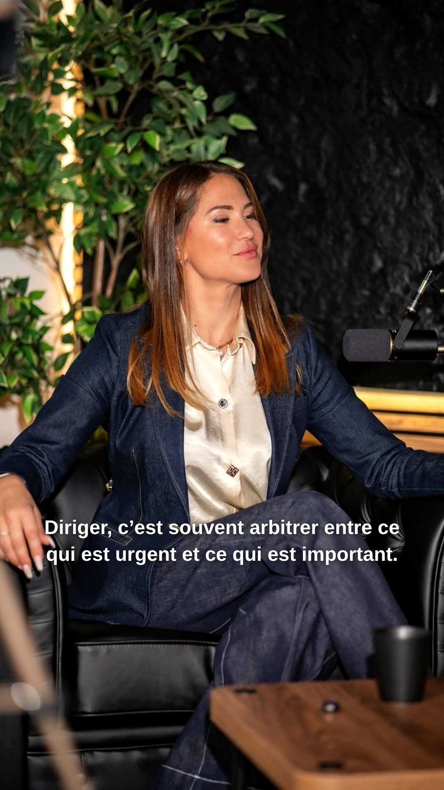</a><figcaption><b>Écran 3 · Réflexion</b><br><a href="img/E-sequences_b-journal-de-dirigeante_ecran-3.jpg" target="_blank" rel="noopener">Ouvrir en 1080 × 1920</a></figcaption></figure><figure class="st"><a href="img/E-sequences_b-journal-de-dirigeante_ecran-4.jpg" target="_blank" rel="noopener">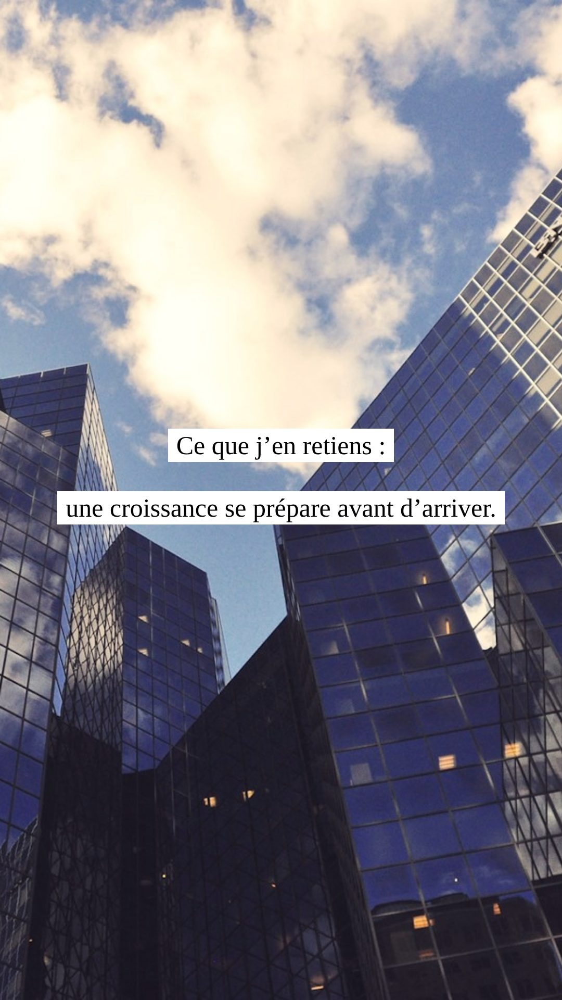</a><figcaption><b>Écran 4 · Enseignement</b><br><a href="img/E-sequences_b-journal-de-dirigeante_ecran-4.jpg" target="_blank" rel="noopener">Ouvrir en 1080 × 1920</a></figcaption></figure></div><h3>Séquence C · Ma vision de l’international<span>La structuration des entrepreneurs</span></h3><div class="stories"><figure class="st"><a href="img/E-sequences_c-ma-vision-de-l-international_ecran-1.jpg" target="_blank" rel="noopener">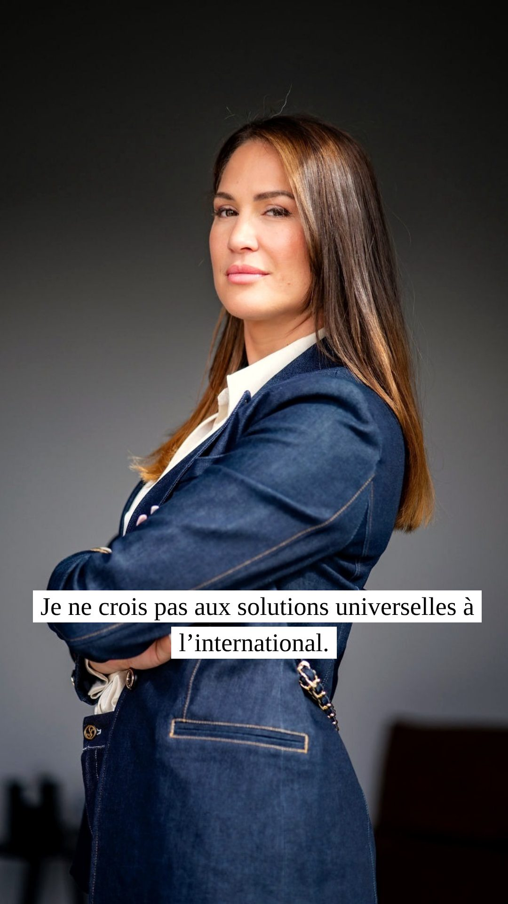</a><figcaption><b>Écran 1 · Prise de position</b><br><a href="img/E-sequences_c-ma-vision-de-l-international_ecran-1.jpg" target="_blank" rel="noopener">Ouvrir en 1080 × 1920</a></figcaption></figure><figure class="st"><a href="img/E-sequences_c-ma-vision-de-l-international_ecran-2.jpg" target="_blank" rel="noopener">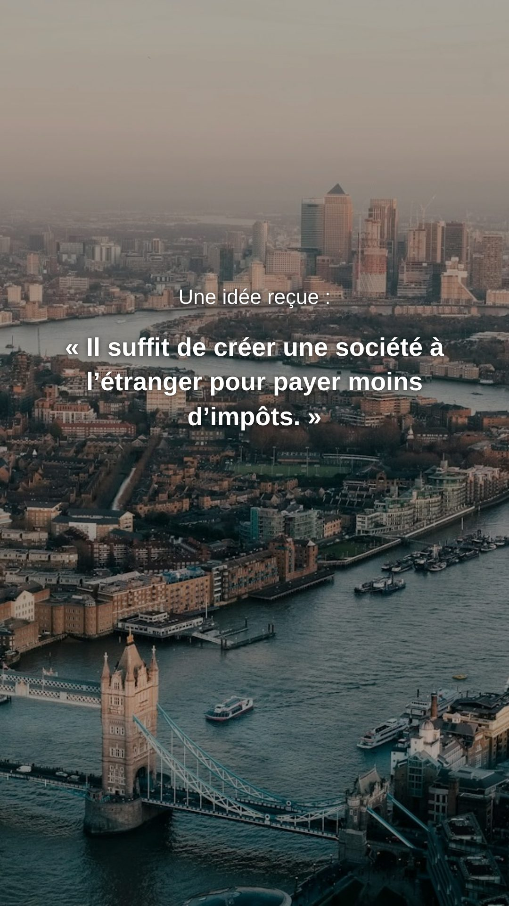</a><figcaption><b>Écran 2 · Idée reçue</b><br><a href="img/E-sequences_c-ma-vision-de-l-international_ecran-2.jpg" target="_blank" rel="noopener">Ouvrir en 1080 × 1920</a></figcaption></figure><figure class="st"><a href="img/E-sequences_c-ma-vision-de-l-international_ecran-3.jpg" target="_blank" rel="noopener">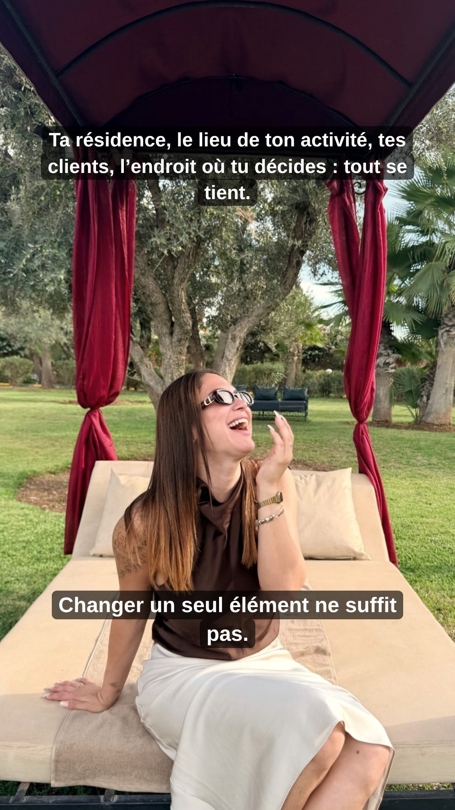</a><figcaption><b>Écran 3 · Raisonnement</b><br><a href="img/E-sequences_c-ma-vision-de-l-international_ecran-3.jpg" target="_blank" rel="noopener">Ouvrir en 1080 × 1920</a></figcaption></figure><figure class="st"><a href="img/E-sequences_c-ma-vision-de-l-international_ecran-4.jpg" target="_blank" rel="noopener">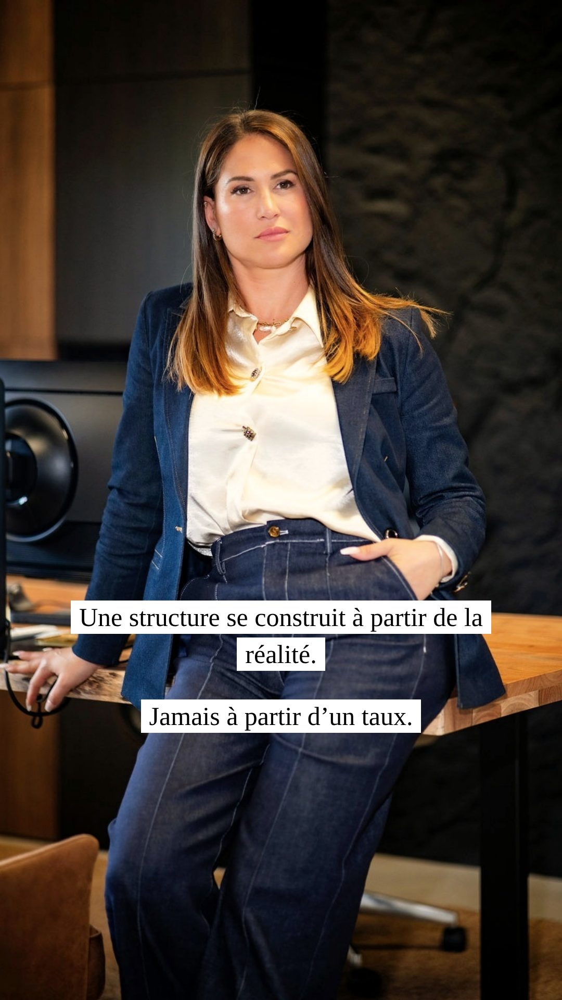</a><figcaption><b>Écran 4 · Conviction</b><br><a href="img/E-sequences_c-ma-vision-de-l-international_ecran-4.jpg" target="_blank" rel="noopener">Ouvrir en 1080 × 1920</a></figcaption></figure><figure class="st"><a href="img/E-sequences_c-ma-vision-de-l-international_apercus-avec-sticker_ecran-5.jpg" target="_blank" rel="noopener">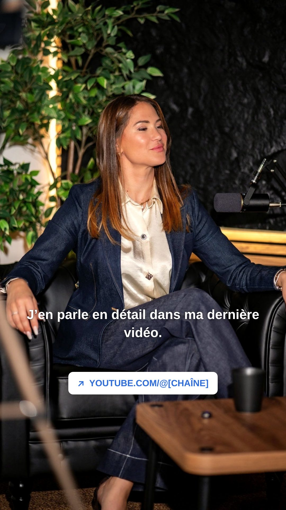</a><figcaption><b>Écran 5 · Redirection YouTube</b><br><a href="img/E-sequences_c-ma-vision-de-l-international_apercus-avec-sticker_ecran-5.jpg" target="_blank" rel="noopener">Ouvrir en 1080 × 1920</a></figcaption></figure></div><h3>Séquence D · Une question que l’on me pose souvent<span>Problématique entrepreneuriale</span></h3><div class="stories"><figure class="st"><a href="img/E-sequences_d-une-question-que-l-on-me-pose_ecran-1.jpg" target="_blank" rel="noopener">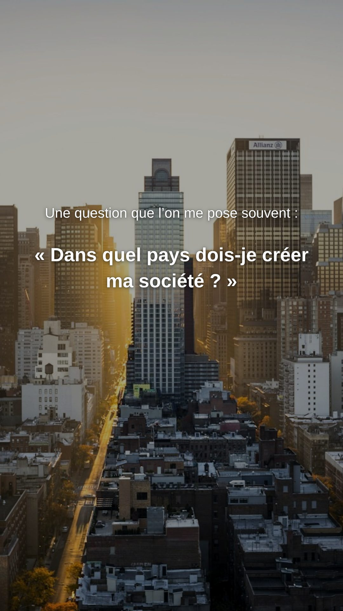</a><figcaption><b>Écran 1 · Question</b><br><a href="img/E-sequences_d-une-question-que-l-on-me-pose_ecran-1.jpg" target="_blank" rel="noopener">Ouvrir en 1080 × 1920</a></figcaption></figure><figure class="st"><a href="img/E-sequences_d-une-question-que-l-on-me-pose_ecran-2.jpg" target="_blank" rel="noopener">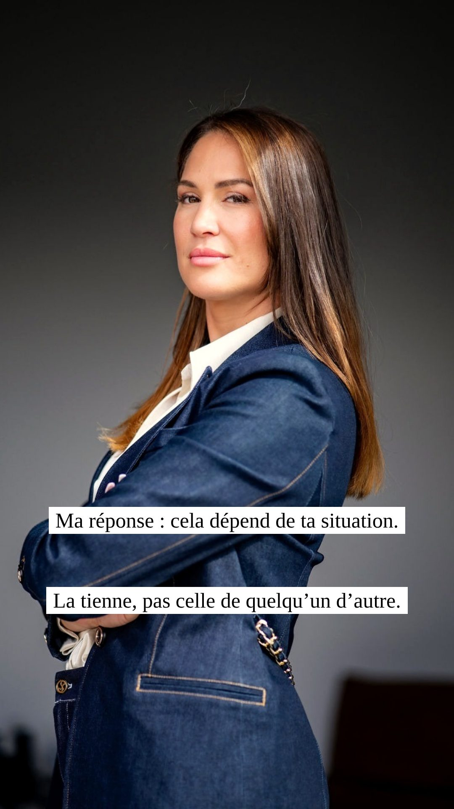</a><figcaption><b>Écran 2 · Réponse</b><br><a href="img/E-sequences_d-une-question-que-l-on-me-pose_ecran-2.jpg" target="_blank" rel="noopener">Ouvrir en 1080 × 1920</a></figcaption></figure><figure class="st"><a href="img/E-sequences_d-une-question-que-l-on-me-pose_ecran-3.jpg" target="_blank" rel="noopener">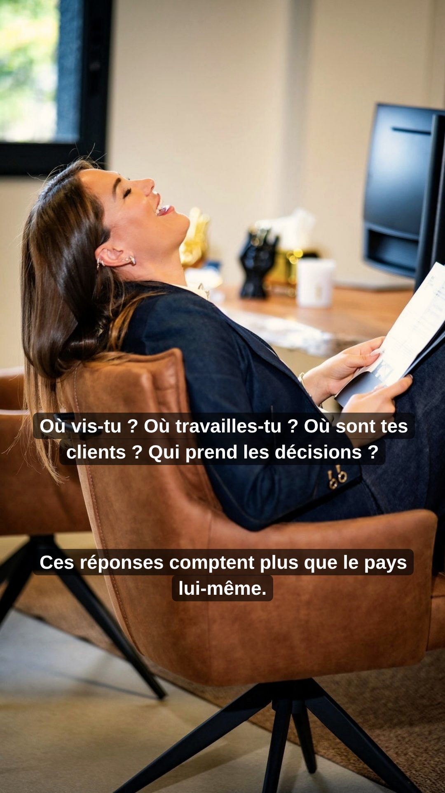</a><figcaption><b>Écran 3 · Mise en perspective</b><br><a href="img/E-sequences_d-une-question-que-l-on-me-pose_ecran-3.jpg" target="_blank" rel="noopener">Ouvrir en 1080 × 1920</a></figcaption></figure><figure class="st"><a href="img/E-sequences_d-une-question-que-l-on-me-pose_apercus-avec-sticker_ecran-4.jpg" target="_blank" rel="noopener">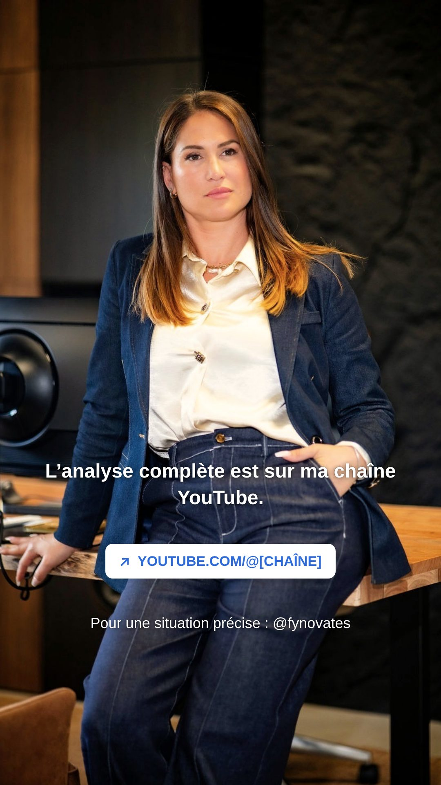</a><figcaption><b>Écran 4 · Redirection</b><br><a href="img/E-sequences_d-une-question-que-l-on-me-pose_apercus-avec-sticker_ecran-4.jpg" target="_blank" rel="noopener">Ouvrir en 1080 × 1920</a></figcaption></figure></div></section><section id="F" data-view="F" hidden><div class="eyebrow">Livrable F</div><h2>Stories à la une</h2><p class="lead">Deux rubriques uniquement. Couverture photographique (proposition principale) ou typographique (variante).</p>
<div class="pair"><figure class="phone"><div class="scr"></div><figcaption>Affichage sous la bio</figcaption></figure><div><div class="covers"><div class="cv"><div class="circ"></div><div class="circ"></div><b>À PROPOS DE MOI</b></div><div class="cv"><div class="circ"></div><div class="circ"></div><b>MON CABINET</b></div></div>
<figure class="phone"><div class="scr"></div><figcaption>Variante typographique sous la bio</figcaption></figure></div></div><h3>Contenu de la rubrique « À PROPOS DE MOI »</h3><div class="stories"><figure class="st"><a href="img/F-stories-a-la-une_a-propos-de-moi_story-1.jpg" target="_blank" rel="noopener"></a><figcaption><b>1 · Qui je suis</b><br><a href="img/F-stories-a-la-une_a-propos-de-moi_story-1.jpg" target="_blank" rel="noopener">Ouvrir en 1080 × 1920</a></figcaption></figure><figure class="st"><a href="img/F-stories-a-la-une_a-propos-de-moi_story-2.jpg" target="_blank" rel="noopener"></a><figcaption><b>2 · Mon parcours</b> · à compléter<br><a href="img/F-stories-a-la-une_a-propos-de-moi_story-2.jpg" target="_blank" rel="noopener">Ouvrir en 1080 × 1920</a></figcaption></figure><figure class="st"><a href="img/F-stories-a-la-une_a-propos-de-moi_story-3.jpg" target="_blank" rel="noopener"></a><figcaption><b>3 · Mon expérience</b><br><a href="img/F-stories-a-la-une_a-propos-de-moi_story-3.jpg" target="_blank" rel="noopener">Ouvrir en 1080 × 1920</a></figcaption></figure><figure class="st"><a href="img/F-stories-a-la-une_a-propos-de-moi_story-4.jpg" target="_blank" rel="noopener"></a><figcaption><b>4 · Ma vision</b><br><a href="img/F-stories-a-la-une_a-propos-de-moi_story-4.jpg" target="_blank" rel="noopener">Ouvrir en 1080 × 1920</a></figcaption></figure><figure class="st"><a href="img/F-stories-a-la-une_a-propos-de-moi_story-5.jpg" target="_blank" rel="noopener"></a><figcaption><b>5 · Mes convictions</b><br><a href="img/F-stories-a-la-une_a-propos-de-moi_story-5.jpg" target="_blank" rel="noopener">Ouvrir en 1080 × 1920</a></figcaption></figure><figure class="st"><a href="img/F-stories-a-la-une_a-propos-de-moi_story-6.jpg" target="_blank" rel="noopener"></a><figcaption><b>6 · Ma personnalité</b><br><a href="img/F-stories-a-la-une_a-propos-de-moi_story-6.jpg" target="_blank" rel="noopener">Ouvrir en 1080 × 1920</a></figcaption></figure></div><h3>Contenu de la rubrique « MON CABINET »</h3><div class="stories"><figure class="st"><a href="img/F-stories-a-la-une_mon-cabinet_story-1.jpg" target="_blank" rel="noopener"></a><figcaption><b>1 · Fynovates</b><br><a href="img/F-stories-a-la-une_mon-cabinet_story-1.jpg" target="_blank" rel="noopener">Ouvrir en 1080 × 1920</a></figcaption></figure><figure class="st"><a href="img/F-stories-a-la-une_mon-cabinet_story-2.jpg" target="_blank" rel="noopener"></a><figcaption><b>2 · Nos domaines d’expertise</b><br><a href="img/F-stories-a-la-une_mon-cabinet_story-2.jpg" target="_blank" rel="noopener">Ouvrir en 1080 × 1920</a></figcaption></figure><figure class="st"><a href="img/F-stories-a-la-une_mon-cabinet_story-3.jpg" target="_blank" rel="noopener"></a><figcaption><b>3 · Notre accompagnement</b><br><a href="img/F-stories-a-la-une_mon-cabinet_story-3.jpg" target="_blank" rel="noopener">Ouvrir en 1080 × 1920</a></figcaption></figure><figure class="st"><a href="img/F-stories-a-la-une_mon-cabinet_story-4.jpg" target="_blank" rel="noopener"></a><figcaption><b>4 · La construction du cabinet</b><br><a href="img/F-stories-a-la-une_mon-cabinet_story-4.jpg" target="_blank" rel="noopener">Ouvrir en 1080 × 1920</a></figcaption></figure><figure class="st"><a href="img/F-stories-a-la-une_mon-cabinet_story-5.jpg" target="_blank" rel="noopener"></a><figcaption><b>5 · Notre équipe</b> · à compléter<br><a href="img/F-stories-a-la-une_mon-cabinet_story-5.jpg" target="_blank" rel="noopener">Ouvrir en 1080 × 1920</a></figcaption></figure><figure class="st"><a href="img/F-stories-a-la-une_mon-cabinet_apercus-avec-sticker_story-6.jpg" target="_blank" rel="noopener"></a><figcaption><b>6 · Coulisses et contact</b><br><a href="img/F-stories-a-la-une_mon-cabinet_apercus-avec-sticker_story-6.jpg" target="_blank" rel="noopener">Ouvrir en 1080 × 1920</a></figcaption></figure></div></section></main>
<footer class="wrap">À compléter : l’identifiant du compte, des photos en réunion et avec l’équipe, des photos d’événement et de déplacements réels, des captures des vraies vidéos, le nom de la chaîne YouTube et le parcours de Tiziana. Les photos de lieux viennent des ressources du projet (Unsplash). Les polices natives d’Instagram sont approchées : les Stories finales se tapent dans l’application. Fichiers : dossier madame-caci/output/ (A à F).</footer>
<script>
const views=[...document.querySelectorAll('[data-view]')],links=[...document.querySelectorAll('nav.tabs a')];
function show(){const h=(location.hash||'#A').slice(1);const id=views.some(v=>v.dataset.view===h)?h:'A';views.forEach(v=>v.hidden=v.dataset.view!==id);links.forEach(a=>a.getAttribute('href')==='#'+id?a.setAttribute('aria-current','page'):a.removeAttribute('aria-current'))}
addEventListener('hashchange',()=>{show();scrollTo(0,0)});show();
</script>